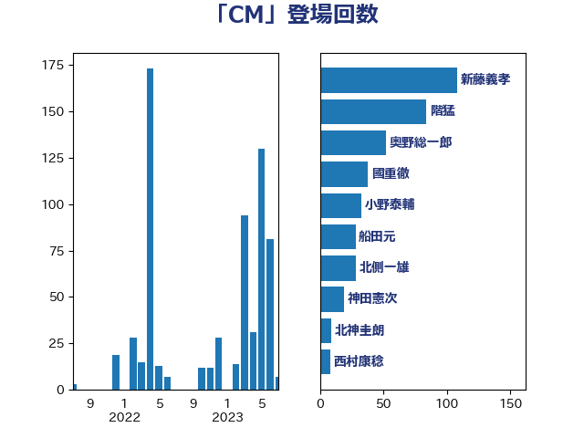

単語「CM」

| 新藤義孝 | 自由民主党 | 108 回 |
| 階猛 | 立憲民主党 | 84 回 |
| 奥野総一郎 | 立憲民主党 | 52 回 |
| 國重徹 | 公明党 | 38 回 |
| 小野泰輔 | 日本維新の会 | 33 回 |
| 船田元 | 自由民主党 | 28 回 |
| 北側一雄 | 公明党 | 28 回 |
| 神田憲次 | 自由民主党 | 19 回 |
| 北神圭朗 | 無所属 | 9 回 |
| 西村康稔 | 自由民主党 | 8 回 |
| 城井崇 | 立憲民主党 | 8 回 |
| 三木圭恵 | 日本維新の会 | 8 回 |
| 足立康史 | 日本維新の会 | 7 回 |
| 玉木雄一郎 | 国民民主党 | 7 回 |
| 吉田宣弘 | 公明党 | 7 回 |
| 上川陽子 | 自由民主党 | 7 回 |
| 堀内詔子 | 自由民主党 | 6 回 |
| 猪瀬直樹 | 日本維新の会 | 5 回 |
| 森山浩行 | 立憲民主党 | 5 回 |
| 東徹 | 日本維新の会 | 5 回 |
| 近藤昭一 | 立憲民主党 | 4 回 |
| 小林鷹之 | 自由民主党 | 4 回 |
| 仁木博文 | 無所属 | 4 回 |
| 鈴木俊一 | 自由民主党 | 3 回 |
| 道下大樹 | 立憲民主党 | 3 回 |
| 福島伸享 | 無所属 | 3 回 |
| 石井苗子 | 日本維新の会 | 3 回 |
| 柴山昌彦 | 自由民主党 | 3 回 |
| 松本剛明 | 自由民主党 | 3 回 |
| 後藤茂之 | 自由民主党 | 3 回 |
| 岸田文雄 | 自由民主党 | 3 回 |
| 岩谷良平 | 日本維新の会 | 3 回 |
| 小西洋之 | 立憲民主党 | 3 回 |
| 加藤勝信 | 自由民主党 | 3 回 |
| 中谷真一 | 自由民主党 | 3 回 |
| 中川正春 | 立憲民主党 | 3 回 |
| 里見隆治 | 公明党 | 2 回 |
| 藤井比早之 | 自由民主党 | 2 回 |
| 田村まみ | 国民民主党 | 2 回 |
| 梅村聡 | 日本維新の会 | 2 回 |
| 打越さく良 | 立憲民主党 | 2 回 |
| 川崎ひでと | 自由民主党 | 2 回 |
| 山田賢司 | 自由民主党 | 2 回 |
| 山下貴司 | 自由民主党 | 2 回 |
| 太田房江 | 自由民主党 | 2 回 |
| 塩田博昭 | 公明党 | 2 回 |
| 佐藤英道 | 公明党 | 2 回 |
| 高木真理 | 立憲民主党 | 1 回 |
| 馬場伸幸 | 日本維新の会 | 1 回 |
| 青木愛 | 立憲民主党 | 1 回 |
| 阿部弘樹 | 日本維新の会 | 1 回 |
| 鈴木庸介 | 立憲民主党 | 1 回 |
| 谷田川元 | 立憲民主党 | 1 回 |
| 芳賀道也 | 国民民主党 | 1 回 |
| 空本誠喜 | 日本維新の会 | 1 回 |
| 稲津久 | 公明党 | 1 回 |
| 渡辺博道 | 自由民主党 | 1 回 |
| 清水貴之 | 日本維新の会 | 1 回 |
| 河野太郎 | 自由民主党 | 1 回 |
| 河西宏一 | 公明党 | 1 回 |
| 榛葉賀津也 | 国民民主党 | 1 回 |
| 森英介 | 自由民主党 | 1 回 |
| 柴田巧 | 日本維新の会 | 1 回 |
| 松野博一 | 自由民主党 | 1 回 |
| 杉尾秀哉 | 立憲民主党 | 1 回 |
| 本庄知史 | 立憲民主党 | 1 回 |
| 末松義規 | 立憲民主党 | 1 回 |
| 星北斗 | 自由民主党 | 1 回 |
| 斉藤鉄夫 | 公明党 | 1 回 |
| 徳永エリ | 立憲民主党 | 1 回 |
| 川田龍平 | 立憲民主党 | 1 回 |
| 岩本剛人 | 自由民主党 | 1 回 |
| 山岸一生 | 立憲民主党 | 1 回 |
| 山下芳生 | 日本共産党 | 1 回 |
| 宮本岳志 | 日本共産党 | 1 回 |
| 宮崎政久 | 自由民主党 | 1 回 |
| 宮崎勝 | 公明党 | 1 回 |
| 大西健介 | 立憲民主党 | 1 回 |
| 吉田統彦 | 立憲民主党 | 1 回 |
| 古賀之士 | 立憲民主党 | 1 回 |
| 伊藤孝恵 | 国民民主党 | 1 回 |
| 中野洋昌 | 公明党 | 1 回 |
| 中西健治 | 自由民主党 | 1 回 |